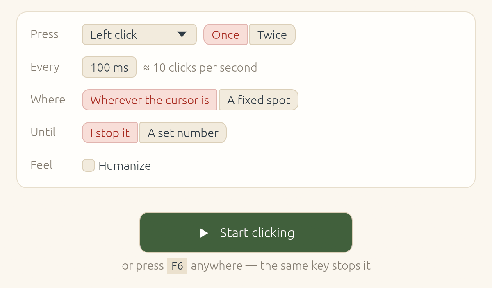

Auto-clicker
Click, or press a key, at a set interval with millisecond precision. It runs until you stop it, or for a set number of clicks.
- Any mouse button or keyboard key, once or twice per interval
- Wherever the cursor is, or at one fixed spot
- Optional humanize: small variations in timing and position
